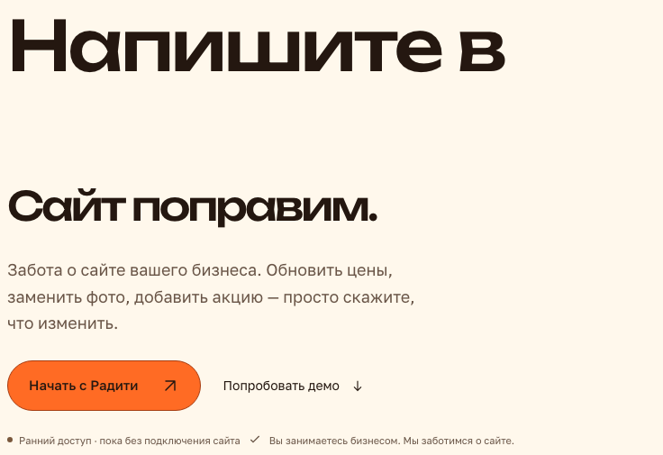
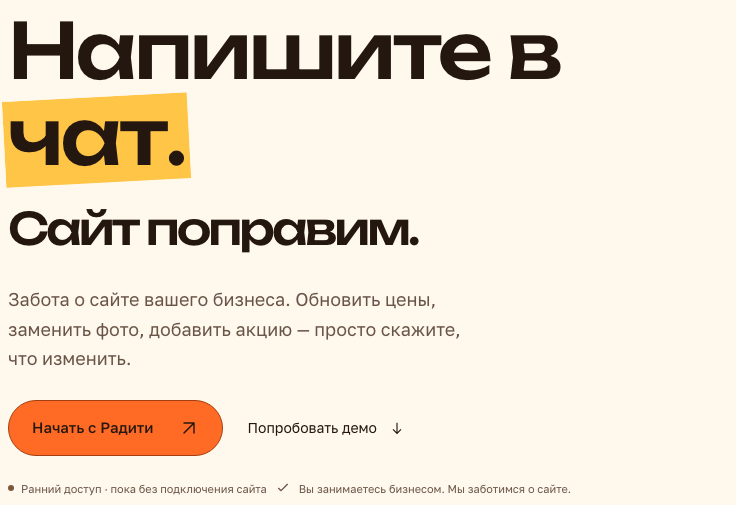

← Ревью главной страницы, 4 октября 2026
Палитра и движение: что есть и что предлагается
Страница показывает то, что в ревью описано таблицами: токены, пары контраста, правки состояний «до → после» и образцы движения. Значения — снимок packages/ui/src/theme/tokens.ts на 04.10.2026; источник правды остаётся там. Код лендинга этой страницей не меняется.
1. Палитра сохраняется
Базовые значения не меняются. Добавляется одна производная роль для контуров управления, ruleStrong, и становится различимым наведение accentHover. Подробно — раздел 3.
2. Пары контраста
Порог для обычного текста 4.5:1, для крупного текста и нетекстовых элементов 3:1. Справа — расчёт по WCAG 2.x.
3. Что меняем в состояниях
Сценарии демо: контур и выбранное состояние
Контур rule — 1.46:1. Выбранная пилюля залита так же, как основная кнопка.
Контур ruleStrong — 3.93:1. Выбор виден заливкой accentSoft и галочкой, оранжевый остаётся за действиями.
Ползунок калькулятора
Незаполненная часть дорожки — 1.46:1 к бумаге.
Под заполнением 3px лежит линия 1px ruleStrong: пустая часть видна и не сливается с заполненной.
Основная кнопка: наведение и нажатие
Наведение меняет заливку на #FF7929: разница с #FF6B24 почти не видна. На нажатие отклика нет.
Наведение — #FF8B30 и сдвиг стрелки за 160 и 240 мс. Нажатие — сжатие до 0.98 за 90 мс. Тёмный текст на новой заливке — 7.43:1.
«Отменить правку» в чате и адрес после применения
Контур graphite на тёмном — 2.48:1; контур onInk — 8.21:1.
Единственная текстовая пара ниже порога: 4.46:1. С цветом ink — 11.06:1.
Вопрос 12: финальная кнопка на янтарном поле
Вопрос 13: статус успеха
Новая цена на сайте. Копия сохранена.
Цвет ok почти совпадает с цветом пояснений.
Новая цена на сайте. Копия сохранена.
Новая цена на сайте. Копия сохранена.
Противоречит действующему правилу «статусы остаются тёплыми».
4. Движение
Библиотека не нужна: всё ниже сделано на CSS. При системной настройке «уменьшить движение» образцы на этой странице статичны, как и на лендинге. Подробно — раздел 4.
Шкала длительностей
press — нажатие; fast — наведение и цвет; base — состояние элемента управления; swap — подмена значения на месте; move — перемещение предмета. Сейчас на странице 15 разных длительностей.
Применить и отменить: направление различает «изменили» и «вернули»
До правки
Сейчас при отмене значение возвращается без движения. В плане новое значение приходит снизу, прежнее возвращается сверху, за 360 мс. Выделение строки лежит на подложке, текст не сдвигается. Сумма подменяется сразу и счётчиком не анимируется.
Появление секций
Смело меняйте.
Вся секция тускнеет до 55 % и съезжает на 24px, хотя текст уже виден.
Смело меняйте.
Поле неподвижно, прозрачность не трогаем. Поднимается только заголовок, и только если он был ниже окна.
Вопрос 27: зачёркивание в тёмной полосе
Надо найти разработчика.Объяснить.Напомнить.Подождать.
А можно просто написать.
Исходное состояние в CSS — строки уже зачёркнуты. Без движения и без скриптов блок выглядит как вариант (а). Линия — 360 мс, шаг между строками 240 мс.
Ответ в «Вопросах»
Нужно разбираться в коде?
Нет. Задачу описывают обычными словами: какую цену поменять, где заменить фото, что добавить на страницу.
Высота раскрывается плавно там, где браузер это умеет. В остальных ответ появляется сразу, как сейчас.
5. Дефект заголовка на ширинах 541–800px
Первым пунктом плана идёт заголовок: на планшетной ширине слово «чат.» с маркером не видно. Правка — 14 строк CSS.

